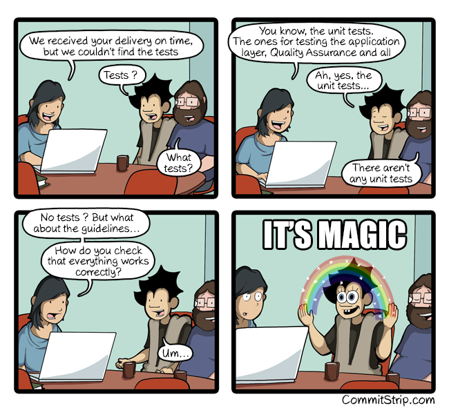
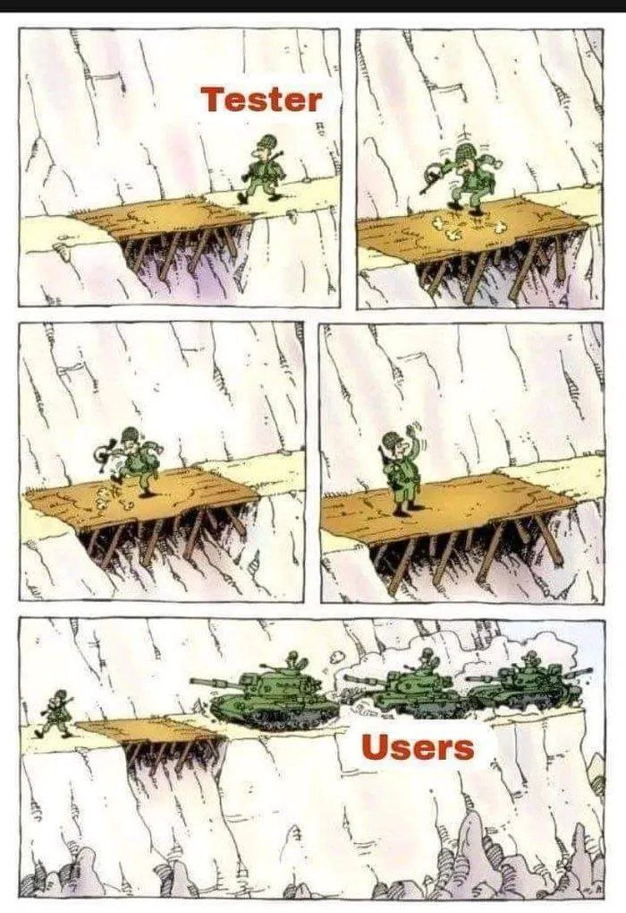
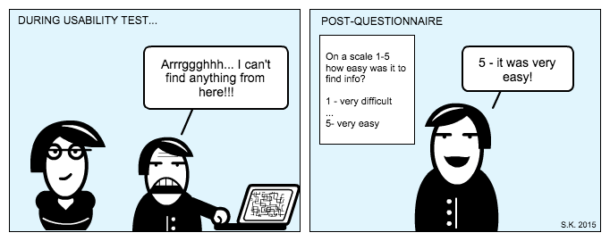

<!DOCTYPE html>
<html lang="en">
  <head>
    <meta charset="utf-8" />
    <meta name="viewport" content="width=device-width, initial-scale=1.0, maximum-scale=1.0, user-scalable=no" />

    <title>Tipos de Tests</title>
    <link rel="stylesheet" href="dist/reveal.css" />
    <link rel="stylesheet" href="dist/theme/solarized.css" id="theme" />
    <link rel="stylesheet" href="plugin/highlight/zenburn.css" />
	<link rel="stylesheet" href="css/layout.css" />
	<link rel="stylesheet" href="plugin/customcontrols/style.css">


    <script defer src="dist/fontawesome/all.min.js"></script>

	<script type="text/javascript">
		var forgetPop = true;
		function onPopState(event) {
			if(forgetPop){
				forgetPop = false;
			} else {
				parent.postMessage(event.target.location.href, "app://obsidian.md");
			}
        }
		window.onpopstate = onPopState;
		window.onmessage = event => {
			if(event.data == "reload"){
				window.document.location.reload();
			}
			forgetPop = true;
		}

		function fitElements(){
			const itemsToFit = document.getElementsByClassName('fitText');
			for (const item in itemsToFit) {
				if (Object.hasOwnProperty.call(itemsToFit, item)) {
					var element = itemsToFit[item];
					fitElement(element,1, 1000);
					element.classList.remove('fitText');
				}
			}
		}

		function fitElement(element, start, end){

			let size = (end + start) / 2;
			element.style.fontSize = `${size}px`;

			if(Math.abs(start - end) < 1){
				while(element.scrollHeight > element.offsetHeight){
					size--;
					element.style.fontSize = `${size}px`;
				}
				return;
			}

			if(element.scrollHeight > element.offsetHeight){
				fitElement(element, start, size);
			} else {
				fitElement(element, size, end);
			}		
		}


		document.onreadystatechange = () => {
			fitElements();
			if (document.readyState === 'complete') {
				if (window.location.href.indexOf("?export") != -1){
					parent.postMessage(event.target.location.href, "app://obsidian.md");
				}
				if (window.location.href.indexOf("print-pdf") != -1){
					let stateCheck = setInterval(() => {
						clearInterval(stateCheck);
						window.print();
					}, 250);
				}
			}
	};


        </script>
  </head>
  <body>
    <div class="reveal">
      <div class="slides"><section  data-markdown><script type="text/template"><!-- .slide: class="drop" data-background-image="Adjuntos/slides.eap.portada.png" -->
<div class="" style="position: absolute; left: 0px; top: 0px; height: 700px; width: 960px; min-height: 700px; display: flex; flex-direction: column; align-items: center; justify-content: center" absolute="true">

# Testing
## Niveles
</div>

<aside class="notes"><p>El proceso de testing comprende varios niveles que se centran en distintas áreas del software y se ejecutan en diferentes etapas del ciclo de vida del desarrollo. Cada nivel tiene sus propios objetivos y enfoques para asegurar la calidad del producto final. Los niveles de testing más comunes son:</p>
</aside></script></section><section  data-markdown><script type="text/template"><!-- .slide: class="drop" data-background-image="Adjuntos/test.types.list.png" -->
<div class="" style="position: absolute; left: 0px; top: 0px; height: 700px; width: 960px; min-height: 700px; display: flex; flex-direction: column; align-items: center; justify-content: center" absolute="true">


</div>

<aside class="notes"><p>listado completo de tests</p>
</aside></script></section><section  data-markdown><script type="text/template"><!-- .slide: class="drop" data-background-image="Adjuntos/test.types.list.highlight.png" -->
<div class="" style="position: absolute; left: 0px; top: 0px; height: 700px; width: 960px; min-height: 700px; display: flex; flex-direction: column; align-items: center; justify-content: center" absolute="true">


</div>

<aside class="notes"><p>donde nos vamos a centrar nosotros</p>
<p>Vamos a revisar cada uno de ellos.</p>
</aside></script></section><section  data-markdown><script type="text/template"><!-- .slide: class="drop" -->
<div class="" style="position: absolute; left: 0px; top: 0px; height: 700px; width: 960px; min-height: 700px; display: flex; flex-direction: column; align-items: center; justify-content: center" absolute="true">

# Enfoque y Objetivo
</div>

<aside class="notes"><p>Aunque haya tests que puedan ser muy parecido o incluso a veces iguales, es muy importante diferenciarlos por enfoque y objetivo.</p>
<!-- .slide: data-background-image="Adjuntos/slides.eap.png" --></aside></script></section><section  data-markdown><script type="text/template"><!-- .slide: class="drop" data-background-image="Adjuntos/slides.eap.png" -->
<div class="" style="position: absolute; left: 0px; top: 0px; height: 700px; width: 960px; min-height: 700px; display: flex; flex-direction: column; align-items: center; justify-content: center" absolute="true">


</div></script></section><section  data-markdown><script type="text/template"><!-- .slide: class="drop" -->
<div class="" style="position: absolute; left: 0px; top: 0px; height: 700px; width: 960px; min-height: 700px; display: flex; flex-direction: column; align-items: center; justify-content: center" absolute="true">

# Funcionales
## Unitarios
</div>

<aside class="notes"><ul>
<li><strong>Enfoque</strong>: Evaluar las funciones individuales del software de la biblioteca de forma aislada.</li>
<li><strong>Objetivo</strong>: Verificar que cada función cumpla con sus requisitos y propósito específico.</li>
<li><strong>Ejemplo</strong>: Probar la función de registro de un nuevo usuario en el sistema de la biblioteca para asegurarse de que todos los datos necesarios se capturen correctamente.<!-- .slide: data-background-image="Adjuntos/slides.eap.png" --></li>
</ul>
</aside></script></section><section  data-markdown><script type="text/template"><!-- .slide: class="drop" -->
<div class="" style="position: absolute; left: 0px; top: 0px; height: 700px; width: 960px; min-height: 700px; display: flex; flex-direction: column; align-items: center; justify-content: center" absolute="true">

# Funcionales
## Integración
</div>

<aside class="notes"><ul>
<li><strong>Enfoque</strong>: Evaluar la integración entre diferentes módulos o componentes del software de la biblioteca.</li>
<li><strong>Objetivo</strong>: Verificar que los distintos componentes del sistema funcionen juntos de manera adecuada y coherente.</li>
<li><strong>Ejemplo</strong>: Probar la integración entre el módulo de gestión de usuarios y el módulo de préstamos para asegurarse de que los datos del usuario se actualicen correctamente al realizar un préstamo.<!-- .slide: data-background-image="Adjuntos/slides.eap.png" --></li>
</ul>
</aside></script></section><section  data-markdown><script type="text/template"><!-- .slide: class="drop" -->
<div class="" style="position: absolute; left: 0px; top: 0px; height: 700px; width: 960px; min-height: 700px; display: flex; flex-direction: column; align-items: center; justify-content: center" absolute="true">

# Funcionales
## Sistema
</div>

<aside class="notes"><ul>
<li><strong>Enfoque</strong>: Evaluar el sistema completo de la biblioteca como una entidad única.</li>
<li><strong>Objetivo</strong>: Verificar que el sistema cumpla con todos los requisitos funcionales y de negocio establecidos.</li>
<li><strong>Ejemplo</strong>: Probar todo el flujo de préstamo de libros, desde la búsqueda del libro hasta la devolución, para garantizar que todas las funciones del sistema funcionen correctamente y de manera integrada.<!-- .slide: data-background-image="Adjuntos/slides.eap.png" --></li>
</ul>
</aside></script></section><section  data-markdown><script type="text/template"><!-- .slide: class="drop" -->
<div class="" style="position: absolute; left: 0px; top: 0px; height: 700px; width: 960px; min-height: 700px; display: flex; flex-direction: column; align-items: center; justify-content: center" absolute="true">

# Funcionales
## UAT 
### User Acceptance Test
</div>

<aside class="notes"><ul>
<li><strong>Enfoque</strong>: Evaluar el sistema desde la perspectiva del usuario final.</li>
<li><strong>Objetivo</strong>: Verificar que el sistema cumpla con las expectativas y necesidades del usuario final.</li>
<li><strong>Ejemplo</strong>: Invitar a los usuarios de la biblioteca a probar el sistema y realizar tareas comunes, como buscar libros y realizar préstamos, para recopilar comentarios sobre la facilidad de uso y la satisfacción del usuario.<!-- .slide: data-background-image="Adjuntos/slides.eap.png" --></li>
</ul>
</aside></script></section><section  data-markdown><script type="text/template"><!-- .slide: class="drop" -->
<div class="" style="position: absolute; left: 0px; top: 0px; height: 700px; width: 960px; min-height: 700px; display: flex; flex-direction: column; align-items: center; justify-content: center" absolute="true">

# Funcionales
## Regresión
</div>

<aside class="notes"><ul>
<li><strong>Enfoque</strong>: Evaluar que las modificaciones realizadas en el software no hayan afectado negativamente a las funcionalidades existentes.</li>
<li><strong>Objetivo</strong>: Asegurar que las características previamente probadas sigan funcionando correctamente después de cada modificación en el código.</li>
<li><strong>Ejemplo</strong>: Después de realizar una actualización en el software de la biblioteca para mejorar la búsqueda de libros, se ejecuta una prueba de regresión para garantizar que otras funciones, como el proceso de préstamo y devolución, no se hayan visto afectadas negativamente por los cambios realizados.<!-- .slide: data-background-image="Adjuntos/slides.eap.png" --></li>
</ul>
</aside></script></section><section  data-markdown><script type="text/template"><!-- .slide: class="drop" data-background-image="Adjuntos/slides.eap.png" -->
<div class="" style="position: absolute; left: 0px; top: 0px; height: 700px; width: 960px; min-height: 700px; display: flex; flex-direction: column; align-items: center; justify-content: center" absolute="true">


</div></script></section><section  data-markdown><script type="text/template"><!-- .slide: class="drop" -->
<div class="" style="position: absolute; left: 0px; top: 0px; height: 700px; width: 960px; min-height: 700px; display: flex; flex-direction: column; align-items: center; justify-content: center" absolute="true">

# Rendimiento
## Carga
</div>

<aside class="notes"><ul>
<li><strong>Enfoque</strong>: Evaluar el rendimiento del sistema bajo condiciones normales de carga.</li>
<li><strong>Objetivo</strong>: Determinar la capacidad del sistema para manejar la carga esperada de manera eficiente.</li>
<li><strong>Ejemplo</strong>: Simular el acceso de un número predeterminado de usuarios al sistema de una biblioteca durante un día laborable para evaluar su rendimiento.<!-- .slide: data-background-image="Adjuntos/slides.eap.png" --></li>
</ul>
</aside></script></section><section  data-markdown><script type="text/template"><!-- .slide: class="drop" -->
<div class="" style="position: absolute; left: 0px; top: 0px; height: 700px; width: 960px; min-height: 700px; display: flex; flex-direction: column; align-items: center; justify-content: center" absolute="true">

# Rendimiento
## Estrés
</div>

<aside class="notes"><ul>
<li><strong>Enfoque</strong>: Evaluar el rendimiento del sistema bajo condiciones extremas o más allá de sus límites normales de capacidad.</li>
<li><strong>Objetivo</strong>: Identificar los puntos de quiebre del sistema y su capacidad para recuperarse después de situaciones de sobrecarga.</li>
<li><strong>Ejemplo</strong>: Someter el sistema de la biblioteca a una carga excesiva o inesperada para evaluar su capacidad de respuesta y recuperación.<!-- .slide: data-background-image="Adjuntos/slides.eap.png" --></li>
</ul>
</aside></script></section><section  data-markdown><script type="text/template"><!-- .slide: class="drop" -->
<div class="" style="position: absolute; left: 0px; top: 0px; height: 700px; width: 960px; min-height: 700px; display: flex; flex-direction: column; align-items: center; justify-content: center" absolute="true">

# Rendimiento
## Resistencia
</div>

<aside class="notes"><ul>
<li><strong>Enfoque</strong>: Evaluar el rendimiento del sistema durante un período prolongado de tiempo.</li>
<li><strong>Objetivo</strong>: Verificar si el sistema puede mantener un rendimiento estable y consistente bajo carga constante.</li>
<li><strong>Ejemplo</strong>: Ejecutar el sistema de la biblioteca durante varios días continuos para evaluar su estabilidad y rendimiento a largo plazo.<!-- .slide: data-background-image="Adjuntos/slides.eap.png" --></li>
</ul>
</aside></script></section><section  data-markdown><script type="text/template"><!-- .slide: class="drop" -->
<div class="" style="position: absolute; left: 0px; top: 0px; height: 700px; width: 960px; min-height: 700px; display: flex; flex-direction: column; align-items: center; justify-content: center" absolute="true">

# Rendimiento
## Volumen
</div>

<aside class="notes"><ul>
<li><strong>Enfoque</strong>: Evaluar cómo el sistema maneja grandes volúmenes de datos, transacciones o usuarios.</li>
<li><strong>Objetivo</strong>: Verificar la escalabilidad y rendimiento del sistema con conjuntos de datos significativos.</li>
<li><strong>Ejemplo</strong>: Cargar una gran cantidad de libros y usuarios en el sistema de la biblioteca para evaluar su capacidad de respuesta.<!-- .slide: data-background-image="Adjuntos/slides.eap.png" --></li>
</ul>
</aside></script></section><section  data-markdown><script type="text/template"><!-- .slide: class="drop" -->
<div class="" style="position: absolute; left: 0px; top: 0px; height: 700px; width: 960px; min-height: 700px; display: flex; flex-direction: column; align-items: center; justify-content: center" absolute="true">

# Rendimiento
## Escalabilidad
</div>

<aside class="notes"><ul>
<li><strong>Enfoque</strong>: Evaluar cómo el sistema se expande o disminuye en función de la carga y la capacidad de procesamiento.</li>
<li><strong>Objetivo</strong>: Determinar hasta qué punto el sistema puede crecer sin comprometer su rendimiento.</li>
<li><strong>Ejemplo</strong>: Incrementar gradualmente el número de usuarios y libros en el sistema de la biblioteca para evaluar su capacidad de escalamiento.<!-- .slide: data-background-image="Adjuntos/slides.eap.png" --></li>
</ul>
</aside></script></section><section  data-markdown><script type="text/template"><!-- .slide: class="drop" -->
<div class="" style="position: absolute; left: 0px; top: 0px; height: 700px; width: 960px; min-height: 700px; display: flex; flex-direction: column; align-items: center; justify-content: center" absolute="true">

# Rendimiento
## Base de Datos
</div>

<aside class="notes"><ul>
<li><strong>Enfoque</strong>: Evaluar el rendimiento de las consultas y operaciones de la base de datos.</li>
<li><strong>Objetivo</strong>: Garantizar que la base de datos pueda manejar eficientemente las consultas y operaciones esperadas.</li>
<li><strong>Ejemplo</strong>: Realizar consultas complejas en la base de datos de la biblioteca para verificar su velocidad y eficiencia.<!-- .slide: data-background-image="Adjuntos/slides.eap.png" --></li>
</ul>
</aside></script></section><section  data-markdown><script type="text/template"><!-- .slide: class="drop" -->
<div class="" style="position: absolute; left: 0px; top: 0px; height: 700px; width: 960px; min-height: 700px; display: flex; flex-direction: column; align-items: center; justify-content: center" absolute="true">

# Rendimiento
## Tiempos de Respuesta
</div>

<aside class="notes"><ul>
<li><strong>Enfoque</strong>: Medir el tiempo que tarda el sistema en responder a una solicitud del usuario.</li>
<li><strong>Objetivo</strong>: Verificar si el sistema cumple con los estándares de tiempo de respuesta aceptables.</li>
<li><strong>Ejemplo</strong>: Registrar el tiempo que lleva procesar una solicitud de préstamo en el sistema de la biblioteca.<!-- .slide: data-background-image="Adjuntos/slides.eap.png" --></li>
</ul>
</aside></script></section><section  data-markdown><script type="text/template"><!-- .slide: class="drop" -->
<div class="" style="position: absolute; left: 0px; top: 0px; height: 700px; width: 960px; min-height: 700px; display: flex; flex-direction: column; align-items: center; justify-content: center" absolute="true">

# Rendimiento
## Confiabilidad
</div>

<aside class="notes"><ul>
<li><strong>Enfoque</strong>: Evaluar la capacidad del sistema para funcionar sin interrupciones durante un período prolongado.</li>
<li><strong>Objetivo</strong>: Identificar cualquier fallo o comportamiento inesperado que pueda comprometer la confiabilidad del sistema.</li>
<li><strong>Ejemplo</strong>: Ejecutar el sistema de la biblioteca durante varios días continuos para detectar posibles problemas de confiabilidad.<!-- .slide: data-background-image="Adjuntos/slides.eap.png" --></li>
</ul>
</aside></script></section><section  data-markdown><script type="text/template"><!-- .slide: class="drop" -->
<div class="" style="position: absolute; left: 0px; top: 0px; height: 700px; width: 960px; min-height: 700px; display: flex; flex-direction: column; align-items: center; justify-content: center" absolute="true">

# Rendimiento
## Red
</div>

<aside class="notes"><ul>
<li><strong>Enfoque</strong>: Evaluar el rendimiento de la red y la comunicación entre los componentes del sistema.</li>
<li><strong>Objetivo</strong>: Garantizar una comunicación eficiente entre los elementos del sistema bajo diferentes condiciones de red.</li>
<li><strong>Ejemplo</strong>: Medir la velocidad de transferencia de datos entre el servidor y los terminales de usuario en la biblioteca.<!-- .slide: data-background-image="Adjuntos/slides.eap.png" --></li>
</ul>
</aside></script></section><section  data-markdown><script type="text/template"><!-- .slide: class="drop" data-background-image="Adjuntos/slides.eap.png" -->
<div class="" style="position: absolute; left: 0px; top: 0px; height: 700px; width: 960px; min-height: 700px; display: flex; flex-direction: column; align-items: center; justify-content: center" absolute="true">


</div></script></section><section  data-markdown><script type="text/template"><!-- .slide: class="drop" -->
<div class="" style="position: absolute; left: 0px; top: 0px; height: 700px; width: 960px; min-height: 700px; display: flex; flex-direction: column; align-items: center; justify-content: center" absolute="true">

# Seguridad
## Autenticación
</div>

<aside class="notes"><ul>
<li><strong>Enfoque</strong>: Evaluar la robustez de los mecanismos de autenticación del sistema.</li>
<li><strong>Objetivo</strong>: Verificar que solo los usuarios autorizados puedan acceder al sistema y que sus credenciales sean protegidas adecuadamente.</li>
<li><strong>Ejemplo</strong>: Intentar acceder al sistema de la biblioteca utilizando credenciales inválidas para asegurarse de que se rechacen correctamente.<!-- .slide: data-background-image="Adjuntos/slides.eap.png" --></li>
</ul>
</aside></script></section><section  data-markdown><script type="text/template"><!-- .slide: class="drop" -->
<div class="" style="position: absolute; left: 0px; top: 0px; height: 700px; width: 960px; min-height: 700px; display: flex; flex-direction: column; align-items: center; justify-content: center" absolute="true">

# Seguridad
## Autorización
</div>

<aside class="notes"><ul>
<li><strong>Enfoque</strong>: Evaluar la efectividad de los controles de acceso y los permisos dentro del sistema.</li>
<li><strong>Objetivo</strong>: Verificar que los usuarios solo puedan acceder a los recursos y realizar acciones para los que tienen permisos autorizados.</li>
<li><strong>Ejemplo</strong>: Intentar acceder a una función administrativa del sistema de la biblioteca como un usuario regular para asegurarse de que se restrinja el acceso correctamente.<!-- .slide: data-background-image="Adjuntos/slides.eap.png" --></li>
</ul>
</aside></script></section><section  data-markdown><script type="text/template"><!-- .slide: class="drop" -->
<div class="" style="position: absolute; left: 0px; top: 0px; height: 700px; width: 960px; min-height: 700px; display: flex; flex-direction: column; align-items: center; justify-content: center" absolute="true">

# Seguridad
## Seguridad de Datos
</div>

<aside class="notes"><ul>
<li><strong>Enfoque</strong>: Evaluar la protección de los datos sensibles almacenados y transmitidos por el sistema.</li>
<li><strong>Objetivo</strong>: Verificar que los datos estén cifrados adecuadamente y que se apliquen medidas de seguridad para protegerlos contra accesos no autorizados.</li>
<li><strong>Ejemplo</strong>: Verificar que los números de tarjetas de crédito almacenados en el sistema de la biblioteca estén cifrados y protegidos contra accesos no autorizados.<!-- .slide: data-background-image="Adjuntos/slides.eap.png" --></li>
</ul>
</aside></script></section><section  data-markdown><script type="text/template"><!-- .slide: class="drop" -->
<div class="" style="position: absolute; left: 0px; top: 0px; height: 700px; width: 960px; min-height: 700px; display: flex; flex-direction: column; align-items: center; justify-content: center" absolute="true">

# Seguridad
## Vulnerabilidades
</div>

<aside class="notes"><ul>
<li><strong>Enfoque</strong>: Identificar vulnerabilidades comunes en aplicaciones web, como inyecciones SQL, XSS (Cross-Site Scripting), CSRF (Cross-Site Request Forgery), etc.</li>
<li><strong>Objetivo</strong>: Identificar y mitigar posibles puntos de acceso para ataques maliciosos en la aplicación web.</li>
<li><strong>Ejemplo</strong>: Realizar pruebas de inyección SQL en el sistema de búsqueda de libros de la biblioteca para verificar si es vulnerable a este tipo de ataques.<!-- .slide: data-background-image="Adjuntos/slides.eap.png" --></li>
</ul>
</aside></script></section><section  data-markdown><script type="text/template"><!-- .slide: class="drop" -->
<div class="" style="position: absolute; left: 0px; top: 0px; height: 700px; width: 960px; min-height: 700px; display: flex; flex-direction: column; align-items: center; justify-content: center" absolute="true">

# Seguridad
## Sistema Operativo
</div>

<aside class="notes"><ul>
<li><strong>Enfoque</strong>: Evaluar la configuración y seguridad del sistema operativo subyacente del servidor.</li>
<li><strong>Objetivo</strong>: Verificar que el sistema operativo esté correctamente configurado y protegido contra amenazas conocidas.</li>
<li><strong>Ejemplo</strong>: Revisar los registros de eventos del sistema de la biblioteca en busca de intentos de acceso no autorizados al servidor.<!-- .slide: data-background-image="Adjuntos/slides.eap.png" --></li>
</ul>
</aside></script></section><section  data-markdown><script type="text/template"><!-- .slide: class="drop" -->
<div class="" style="position: absolute; left: 0px; top: 0px; height: 700px; width: 960px; min-height: 700px; display: flex; flex-direction: column; align-items: center; justify-content: center" absolute="true">

# Seguridad

## Ingeniería Social
</div>

<aside class="notes"><ul>
<li><strong>Enfoque</strong>: Evaluar la resistencia de los usuarios del sistema ante técnicas de ingeniería social, como el phishing o la suplantación de identidad.</li>
<li><strong>Objetivo</strong>: Sensibilizar a los usuarios sobre las posibles amenazas y entrenarlos para reconocer y evitar ataques de ingeniería social.</li>
<li><strong>Ejemplo</strong>: Simular un correo electrónico de phishing dirigido a los usuarios del sistema de la biblioteca para evaluar su capacidad para identificar y reportar correos electrónicos sospechosos.<!-- .slide: data-background-image="Adjuntos/slides.eap.png" --></li>
</ul>
</aside></script></section><section  data-markdown><script type="text/template"><!-- .slide: class="drop" data-background-image="Adjuntos/slides.eap.png" -->
<div class="" style="position: absolute; left: 0px; top: 0px; height: 700px; width: 960px; min-height: 700px; display: flex; flex-direction: column; align-items: center; justify-content: center" absolute="true">


</div></script></section><section  data-markdown><script type="text/template"><!-- .slide: class="drop" -->
<div class="" style="position: absolute; left: 0px; top: 0px; height: 700px; width: 960px; min-height: 700px; display: flex; flex-direction: column; align-items: center; justify-content: center" absolute="true">

# Usabilidad
## Facilidad de Uso
</div>

<aside class="notes"><ul>
<li><strong>Enfoque</strong>: Evaluar la facilidad con la que los usuarios pueden aprender y utilizar el sistema.</li>
<li><strong>Objetivo</strong>: Identificar áreas del sistema que puedan causar confusión o dificultades para los usuarios y proponer mejoras para hacer el sistema más intuitivo.</li>
<li><strong>Ejemplo</strong>: Observar a los usuarios mientras realizan una búsqueda de libros en el sistema de la biblioteca y recopilar sus comentarios sobre la facilidad de uso de la interfaz de búsqueda.<!-- .slide: data-background-image="Adjuntos/slides.eap.png" --></li>
</ul>
</aside></script></section><section  data-markdown><script type="text/template"><!-- .slide: class="drop" -->
<div class="" style="position: absolute; left: 0px; top: 0px; height: 700px; width: 960px; min-height: 700px; display: flex; flex-direction: column; align-items: center; justify-content: center" absolute="true">

# Usabilidad
## Eficiencia
</div>

<aside class="notes"><ul>
<li><strong>Enfoque</strong>: Evaluar la rapidez con la que los usuarios pueden realizar tareas dentro del sistema.</li>
<li><strong>Objetivo</strong>: Identificar posibles obstáculos que puedan ralentizar el flujo de trabajo de los usuarios y proponer mejoras para optimizar la eficiencia del sistema.</li>
<li><strong>Ejemplo</strong>: Cronometrar el tiempo que tardan los usuarios en completar un préstamo de libro en el sistema de la biblioteca y compararlo con un objetivo de tiempo establecido.<!-- .slide: data-background-image="Adjuntos/slides.eap.png" --></li>
</ul>
</aside></script></section><section  data-markdown><script type="text/template"><!-- .slide: class="drop" -->
<div class="" style="position: absolute; left: 0px; top: 0px; height: 700px; width: 960px; min-height: 700px; display: flex; flex-direction: column; align-items: center; justify-content: center" absolute="true">

# Usabilidad
## Satisfacción del Usuario
</div>

<aside class="notes"><ul>
<li><strong>Enfoque</strong>: Evaluar el grado de satisfacción y la experiencia general del usuario al interactuar con el sistema.</li>
<li><strong>Objetivo</strong>: Identificar aspectos del sistema que puedan afectar negativamente la satisfacción del usuario y proponer mejoras para aumentar la satisfacción y la retención de usuarios.</li>
<li><strong>Ejemplo</strong>: Realizar encuestas de satisfacción del usuario después de que los usuarios hayan utilizado el sistema de la biblioteca para evaluar su experiencia y recopilar comentarios sobre áreas de mejora.<!-- .slide: data-background-image="Adjuntos/slides.eap.png" --></li>
</ul>
</aside></script></section><section  data-markdown><script type="text/template"><!-- .slide: class="drop" -->
<div class="" style="position: absolute; left: 0px; top: 0px; height: 700px; width: 960px; min-height: 700px; display: flex; flex-direction: column; align-items: center; justify-content: center" absolute="true">

# Usabilidad
## Accesibilidad
</div>

<aside class="notes"><ul>
<li><strong>Enfoque</strong>: Evaluar la accesibilidad del sistema para usuarios con discapacidades, como problemas de visión o motrices.</li>
<li><strong>Objetivo</strong>: Identificar barreras de accesibilidad y proponer mejoras para garantizar que el sistema sea utilizable por todos los usuarios, independientemente de sus capacidades.</li>
<li><strong>Ejemplo</strong>: Realizar pruebas de navegación utilizando solo el teclado para evaluar la accesibilidad del sistema de la biblioteca para usuarios con discapacidades motoras.<!-- .slide: data-background-image="Adjuntos/slides.eap.png" --></li>
</ul>
</aside></script></section><section  data-markdown><script type="text/template"><!-- .slide: class="drop" -->
<div class="" style="position: absolute; left: 0px; top: 0px; height: 700px; width: 960px; min-height: 700px; display: flex; flex-direction: column; align-items: center; justify-content: center" absolute="true">

# Usabilidad
## Estética y Diseño
</div>

<aside class="notes"><ul>
<li><strong>Enfoque</strong>: Evaluar la estética y el diseño visual del sistema, incluida la disposición de elementos y el uso de colores y tipografía.</li>
<li><strong>Objetivo</strong>: Identificar aspectos del diseño que puedan mejorar la experiencia del usuario y la percepción general del sistema.</li>
<li><strong>Ejemplo</strong>: Solicitar a los usuarios que evalúen la apariencia visual del sistema de la biblioteca y proporcionen retroalimentación sobre qué aspectos del diseño podrían mejorarse.</li>
</ul>
<!-- .slide: data-background-image="Adjuntos/slides.eap.png" --></aside></script></section></div>
    </div>

    <script src="dist/reveal.js"></script>

    <script src="plugin/markdown/markdown.js"></script>
    <script src="plugin/highlight/highlight.js"></script>
    <script src="plugin/zoom/zoom.js"></script>
    <script src="plugin/notes/notes.js"></script>
    <script src="plugin/math/math.js"></script>
	<script src="plugin/mermaid/mermaid.js"></script>
	<script src="plugin/chart/chart.min.js"></script>
	<script src="plugin/chart/plugin.js"></script>
	<script src="plugin/customcontrols/plugin.js"></script>

    <script>
      function extend() {
        var target = {};
        for (var i = 0; i < arguments.length; i++) {
          var source = arguments[i];
          for (var key in source) {
            if (source.hasOwnProperty(key)) {
              target[key] = source[key];
            }
          }
        }
        return target;
      }

	  function isLight(color) {
		let hex = color.replace('#', '');

		// convert #fff => #ffffff
		if(hex.length == 3){
			hex = `${hex[0]}${hex[0]}${hex[1]}${hex[1]}${hex[2]}${hex[2]}`;
		}

		const c_r = parseInt(hex.substr(0, 2), 16);
		const c_g = parseInt(hex.substr(2, 2), 16);
		const c_b = parseInt(hex.substr(4, 2), 16);
		const brightness = ((c_r * 299) + (c_g * 587) + (c_b * 114)) / 1000;
		return brightness > 155;
	}

	var bgColor = getComputedStyle(document.documentElement).getPropertyValue('--r-background-color').trim();
	var isLight = isLight(bgColor);

	if(isLight){
		document.body.classList.add('has-light-background');
	} else {
		document.body.classList.add('has-dark-background');
	}

      // default options to init reveal.js
      var defaultOptions = {
        controls: true,
        progress: true,
        history: true,
        center: true,
        transition: 'default', // none/fade/slide/convex/concave/zoom
        plugins: [
          RevealMarkdown,
          RevealHighlight,
          RevealZoom,
          RevealNotes,
          RevealMath.MathJax3,
		  RevealMermaid,
		  RevealChart,
		  RevealCustomControls,
        ],


    	allottedTime: 120 * 1000,

		mathjax3: {
			mathjax: 'plugin/math/mathjax/tex-mml-chtml.js',
		},
		markdown: {
		  gfm: true,
		  mangle: true,
		  pedantic: false,
		  smartLists: false,
		  smartypants: false,
		},

		mermaid: {
			theme: isLight ? 'default' : 'dark',
		},

		customcontrols: {
			controls: [
			]
		},
      };

      // options from URL query string
      var queryOptions = Reveal().getQueryHash() || {};

      var options = extend(defaultOptions, {"width":960,"height":700,"margin":0.04,"controls":false,"progress":false,"slideNumber":false,"transition":"slide","transitionSpeed":"default"}, queryOptions);
    </script>

    <script>
      Reveal.initialize(options);
    </script>
  </body>

  <!-- created with Advanced Slides -->
</html>
